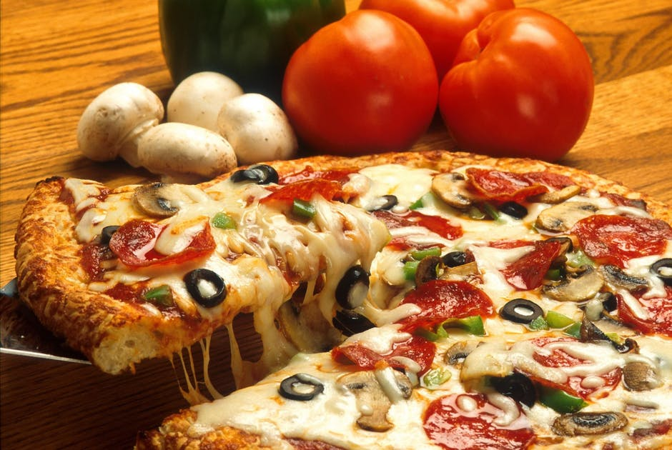
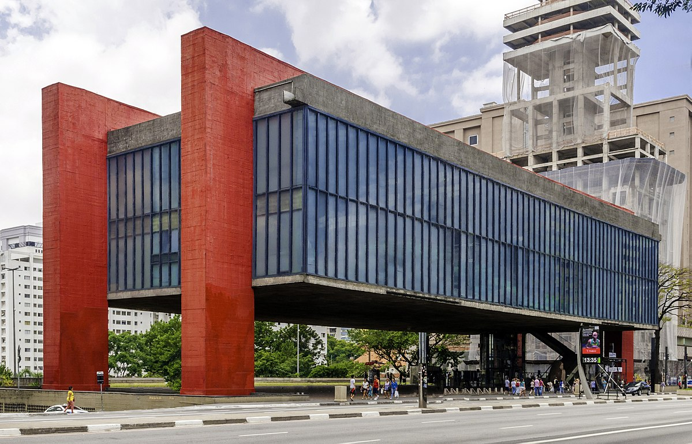
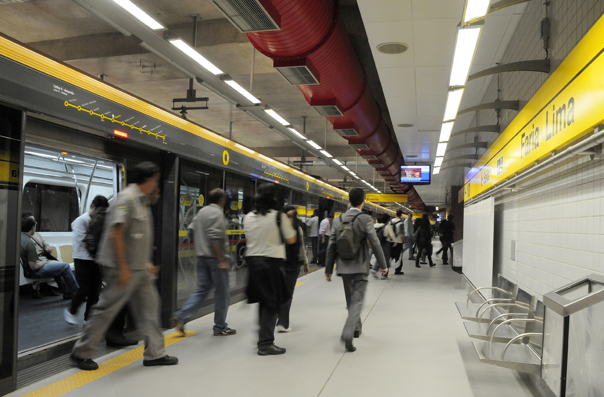

"A CIDADE QUE NUNCA DORME"
Curiosidades
São Paulo: a cidade que funciona 24 horas por dia. Com cerca de 20 milhões de habitantes, é apelidada como “a cidade que não dorme jamais ”. E a fama não é à toa! É possível encontrar os mais diversos serviços 24 horas nesta que é uma das maiores capitais da América Latina.Os Paulistas consomem mais de 1 milhão de pizzas por dia
São Paulo é a segunda cidade que mais consome pizza no mundo, ficando atrás somente de Nova Iorque. Os paulistanos consomem mais de 700 pizzas por minuto, segundo dados do São Paulo Convention & Visitors Bureau! É tanto amor que Sampa tem uma pizzaria que promete nunca fechar, a Al Capizza. O lugar funciona de domingo a domingo, durante 24 horas por dia.
São Paulo é a 5ª cidade com o maior número de museus no mundo
São Paulo tem sido cada vez mais conhecida pelo seu viés cultural. A cidade tem mais de 110 museus, com diversos conteúdos, exposições e instalações para qualquer tipo de público. E não é só de museu que vive a cultura paulistana, a cidade tem mais de 160 teatros, centenas de casas de show e 39 centros culturais. É arte e cultura pulsando nas veias.
O metrô de São Paulo está entre os 10 melhores do mundo
Parece ironia, mas o metrô de São Paulo está entre os 10 melhores do mundo. E da lista é o único da América Latina, com uma rede de 77 km, 6 linhas e 66 estações. Ainda que a rede não seja extensa, transporta 895 milhões de pessoas por ano. A falta de distribuição moradores empresas de São Paulo acarreta na superlotação, e por isso só com muita inteligência para atender todo o fluxo de passageiros nos horários de pico.
